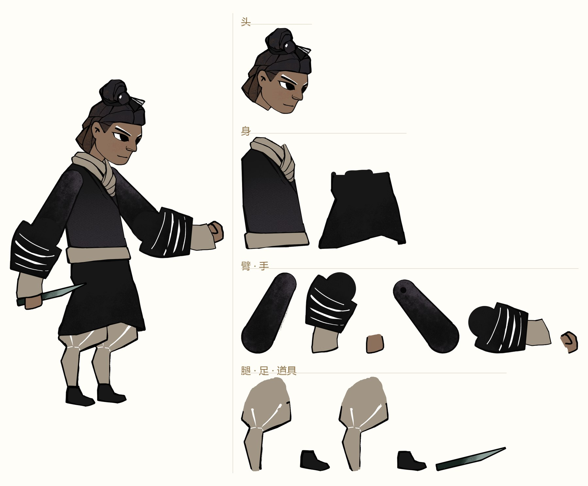
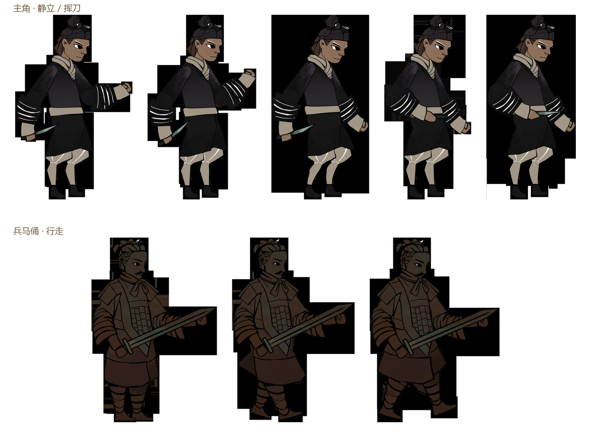
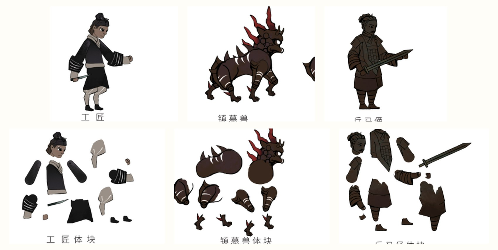
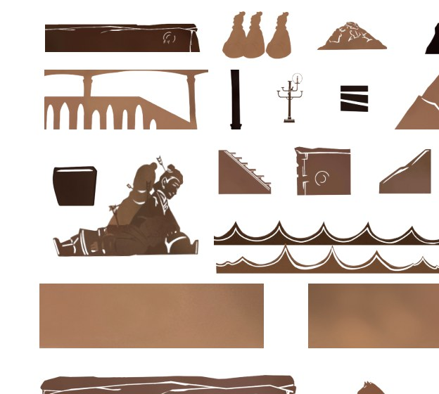
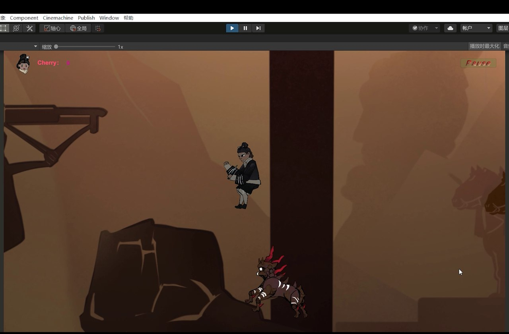
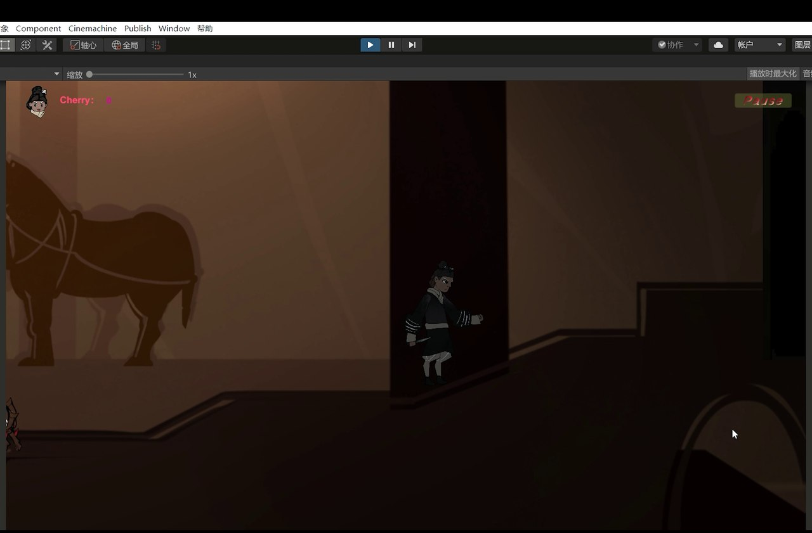
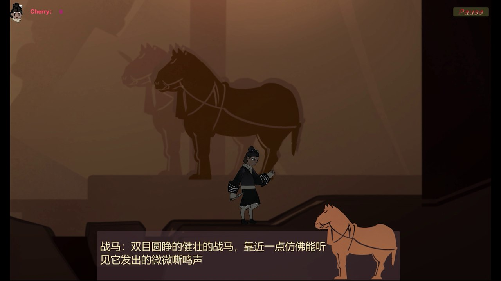
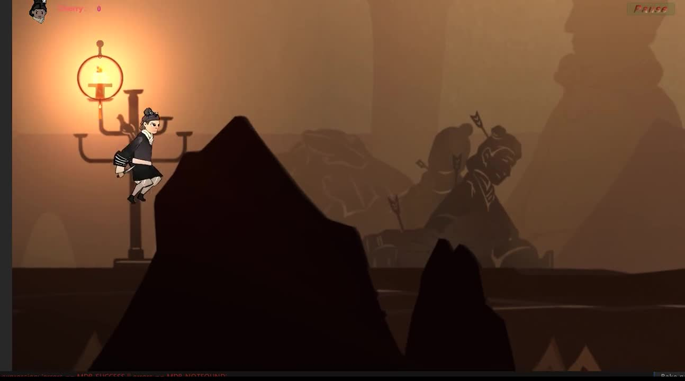

PROJECT 04
帝陵
Diling · A 2D Side-scrolling Escape Game
项目角色：资料收集与考据 · 游戏框架与风格定位 · 程序编写 · 场景搭建 —— 以秦始皇陵修陵工匠的逃生为题，把皮影戏的镂刻剪影与兵马俑造型嵌进 2D 横版解谜；从概念到可运行原型，各环节都有参与并承担了主要部分。
项目角色：资料收集与考据 · 游戏框架与风格定位 · 程序编写 · 场景搭建 —— 以秦始皇陵修陵工匠的逃生为题，把皮影戏的镂刻剪影与兵马俑造型嵌进 2D 横版解谜；从概念到可运行原型，各环节都有参与并承担了主要部分。
秦始皇陵的修建是史上规模最大的工程之一，而修陵工匠的命运几乎无人讲述。 项目选择从工匠的视角进入这段历史：一位技艺高超的匠人参与陵墓营造，竣工在即， 二世胡亥却下令把工匠活埋于陵中以守机密——「其中一位工匠见势不妙，钻入了一条水道之中装死逃过一劫」。 玩家要做的，就是替他逃出去。
形式定为 2D 横版解谜逃生：在逃跑的路上遭遇机关与追兵，逐一破解、避免被活埋的结局。 视觉上把皮影戏的镂刻剪影语言与兵马俑的造型熔在一起——平面的剪影天然适合横版， 也让整座帝陵像一座会动的皮影戏台。
我的部分：资料收集与考据、游戏框架与风格定位，并自学 Unity 完成程序编写与场景搭建——从概念一路推到可运行原型。
皮影不是贴上去的风格皮，而是角色的制作结构。


三组造型：工匠（主角）、镇墓兽（机关与威胁）、兵马俑（陵中的「守卫」）。 先做体块（Blockout）验证比例与体量，确认动态关系后，再落成皮影化的平面剪影—— 这一步决定了角色在横版画面里的可读性：剪影要一眼可辨，动作要干净。

关卡用瓦片地图逐块搭建：屋脊、柱础、楼梯、斜坡、器物与山影都做成可复用瓦片， 拼出陵内地道与地面两个层次。机关与叙事由考据撑起来。
最核心的依据是「物勒工名」——战国秦制规定，制作者要在陶俑、陶马等制品上刻划或戳印自己的名字，
以便追责质量。考古工作者在兵马俑的隐蔽处发现过成批的刻划、戳印文字：人名与官署、仅人名、仅数字……
有了名字，陵墓才不只是「工程」，而是一群人的命运。
这条考据也因此进入关卡叙事：主角的名字，本来就刻在陵墓里。


故事分镜与运行实况（1 分 38 秒）：开场交代修陵工匠的命运，随后进入操作—— 攀爬梁柱、躲避追兵、借火盆辨路，一路寻到水道出口。
1 分 38 秒 · 故事分镜与运行实况（静音）




这是第一次完整走完「历史考据 → 视觉体系 → 可玩原型」的链路： 用皮影的可动部件结构解决 2D 角色动画，用「物勒工名」把出土文物变成关卡叙事， 并把项目从概念一路推到可运行。 项目让我确认了一件事——传统文化的数字化，不止于把文物做成好看的图，而是替它找到一种可以被「玩」的讲法。
后续的毕设「云鬓花颜」与「山海纪」，仍沿用这套「先考据、再转译」的工作方法。
返回作品集首页